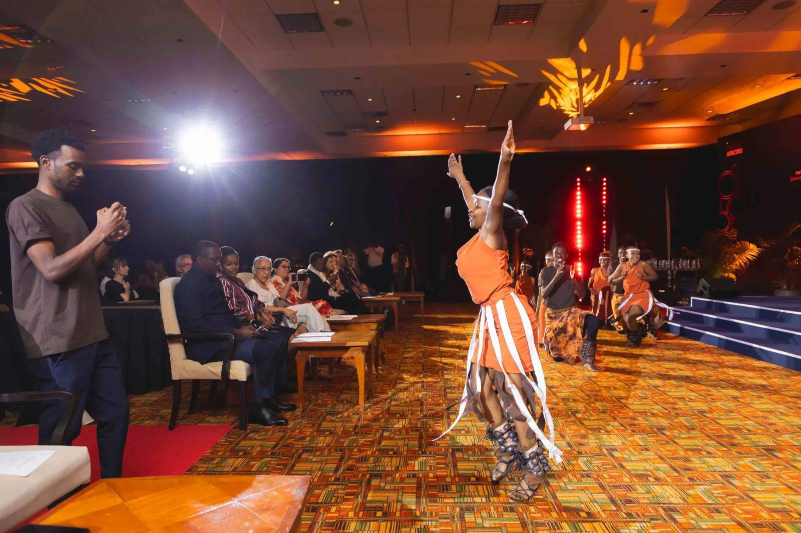

Festivals · Film
Mashariki African Film Festival 2026
- Dates
- –
- Venue
- Kigali Conference and Exhibition Village, Century Cinema, Bora Bora Cine and Serena Hotel
- Location
- Kigali, Rwanda
- Format
- In-person
- Category
- Film
- Industry
- Film festival
- Organiser
- Mashariki African Film Festival
- Official website
- https://www.masharikifestival.org/
About
12th edition, theme 'Reels of Resilience'. Official homepage and Plan Your Visit (fetched 24 Nov 2026): 'November 23rd–29th, 2026 · Kigali, Rwanda'. Still running on 24 Nov 2026. Official visit page: free to attend; venues include Kigali Conference and Exhibition Village, Century Cinema, Bora Bora Cine and Serena Hotel. Rwanda dates are local (Central Africa Time, CAT, Africa/Kigali, UTC+2, no daylight saving).
Topics: African cinema, film screenings, workshops.
No organiser attendance figure found on the official pages checked (24 Nov 2026). Ranked by an estimated size tier 'medium' (our judgement from format, venue and scale, not an official number).